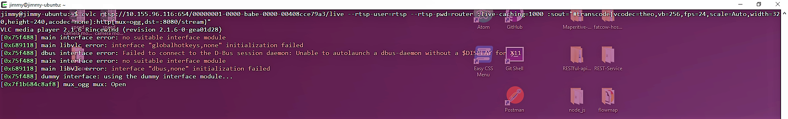

this test will use the video tag to create a stream from an axis camera. ths stream source is from VLC running on the Linux development server at 192.168.1.46 The full stream address is: http://192.168.1.46:8080/stream which you can
run on a VLC client. so far i only managed to get the stream from VLC working with the ogg format encapsulation with no audio. have to look into using NODE.js server side stream solution
the src stream is encapsulated in an ogg container and encoded with h.264 and no audio. the video source stream that VLC encodes directly from the Axis camera is:
rtsp://192.168.96.71/axis-media/media.amp?videocodec=h264
from a terminal you can use the following command to start streaming (example using the stream directly from the Axis camera):
cvlc rtsp://192.168.96.71/axis-media/media.amp?videocodec=h264 :sout="#transcode{vcodec=theo,vb=256,fps=24,scale=Auto,width=320,height=240,acodec=none}:http{mux=ogg,dst=:8080/stream}"
from a terminal you can use the following command to start streaming (example using the stream from genetec):
cvlc rtsp://10.155.96.116:654/00000001-0000-babe-0000-00408cce79a3/live --rtsp-user=rtsp --rtsp-pwd=router :live-caching=1000 :sout="#transcode{vcodec=theo,vb=256,fps=24,scale=Auto,width=320,height=240,acodec=none}:http{mux=ogg,dst=:8080/stream}"
